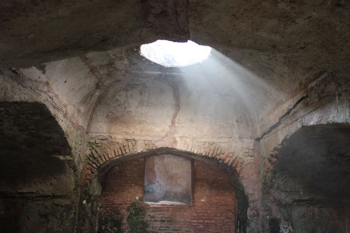

খানপুর, শ্যামনগর শ্যামনগর উপজেলার খানপুর গ্রামে অবস্থিত রাজা প্রতাপাদিত্যের জাহাজঘাটা নৌদুর্গ। এটি শ্যামনগর সদর উপজেলার একটি গ্রাম।
যমুনা-ইছামতি নদীর পূর্ব পাড়ে এ জাহাজঘাটায় রণতরী তৈরী ও মেরামতের কাজ হতো। মুঘল আক্রমন প্রতিহত করতে রাজা প্রতাপাদিত্য শক্তিশালী নৌবাহিনী গড়ে তোলেন। এখানে ছিল তার প্রধান কার্যালয় ও পোতাশ্রয়। নৌবিভাগের প্রধান ছিলেন পর্তুগীজ নাগরিক সেনাপতি ফ্রেডরিক ডুডলী ও বডারিগো।
জাহাজঘাটার একটি মাত্র ভবন ভেঙ্গেচুরে এখনও কালের সাক্ষী হয়ে টিকে আছে। উত্তর-দক্ষিণে লম্বা এ ভবনটিতে ছয়টি কক্ষ রয়েছে। এর মধ্যে অফিস, মালখানা, শয়নকক্ষ ছিল। এই ভবনের এক অংশে কোন জানালা নেই। ছাদের গম্বুজে বড় বড় ছিদ্র। যে জন্য ঘরের মধ্যে প্রয়োজনীয় আলো প্রবেশ করে। ঐ ছিদ্রে স্ফটিক বা স্বচ্ছ কাঁচ বসানো ছিল বলে ঐতিহাসিকের ধারণা।
ঈশ্বরীপুরের হাম্মামখানার সাথে এর কিছু সাদৃশ্য দেখা যায়। ‘‘ইসলাম খান সেনাপতি মির্জা নাথান প্রতাপাদিত্যের সঙ্গে শেষ যুদ্ধের বর্ণনা দিতে গিয়ে বলেছেন, ‘প্রতাপাদিত্যের সেনাপতি খাজা কামাল পিয়ারা, কোশা, বালিয়া, পাল, ঘুরাব (ভাসমান কামান শ্রেণি), মাছুয়া, পাস্তা এবং জালিয়া নৌকাসহ অগ্রবর্তী বাহিনীর নেতৃত্বে দেন’’। জাহাজঘাটার নির্মাণ করা হয়েছিল ষোল শতকের শেষ দশকে।
কালিগঞ্জ থেকে শ্যামনগর যাওয়ার পথে মৌতলা পার হলেই খানপুর। পাকা রাস্তার পূর্ব পাশে এর অবস্থান জাহাজঘাটার পাশে নৌ সেনাপতি ডুডলির নামানুসারে বর্তমান দুদলী গ্রামে নৌকা, জাহাজ নির্মাণ ও সংরক্ষণের ‘ডক’ ছিল । শ্যামনগর থেকে এটির দুরত্ব ৩ কিলোমিটার। স্থানীয় সকল যানবাহনসহ বাস, মাইক্রোবাসযোগে স্থানটিতে যাওয়া যায়।